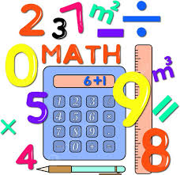
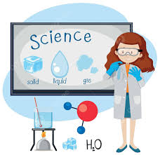

Mi materias favoritas.

¿Que son las matematicas y para que sirven.?
- Las matemáticas son una ciencia formal y deductiva que estudia
las propiedades, estructuras, relaciones y patrones de entes abstractos como números, figuras geométricas
y símbolos
- Las matemáticas sirven fundamentalmente para desarrollar el pensamiento lógico, analítico y crítico,
permitiendo resolver problemas complejos tanto en la vida cotidiana como en campos avanzados
(tecnología, ciencia, banca). Ayudan a modelar el mundo, tomar decisiones informadas, optimizar recursos y
fomentar la abstracción.
|
|
|
 |
| LENGUAJE |
MATEMATICAS |
SOCIALES |
CIENCIAS |